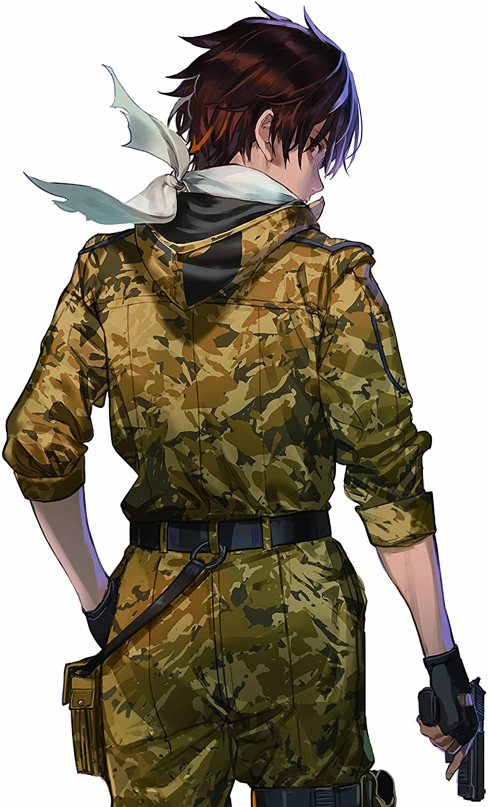

86―エイティシックス―
先放一张蕾娜和辛

这两张图来自86动画版的BDRay图(感觉直接放上来有版权问题，之前的食蜂操祈也是，啊不管了)
文笔上来说
这部书的文笔还是很不错的，大有场景上的宏大描写，小有各种国家细节文化差异的设定与精细的刻画，自然环境，人类建筑，各国文化差异的符号都有。比如1区的花火和喷泉，纯白的各式建筑和细节，到战场的满地鲜红的石蕊(彼岸花)，给人很强的视觉感，虽然能不能在文学上起到给读者暗示剧情发展或是更多让设定更立体的作用就不得而知了，但是咱在看的时候还是感受到了随着场景变化带来的人物心境的改变。
总的来说，86在环境方面的表现还是很优秀的。
机甲的设定和战斗方面
战斗方面的描写也是很细致，只能说作者花大量篇幅去写各种战斗场面，实在是很喜欢机甲战斗的场景呢，嘛看这种场景确实就图个爽，也确实写得很对味就算是了。
希望A-1不要不识抬举，动画化不要搞烂了就好。
关于世界观
虽然从严谨角度来看，无情战争机器的世界观，抑或是白猪作为统治者的压榨来达成自己维护统治的目的，腐朽的政治之类的，并不太符合逻辑。其实对于像我这样的小白读者，并不深究逻辑，毕竟像1984这样的书都有行政效率这样的BUG。黑86世界观的人很多，我的想法大概是，这样的世界观和设定虽然有其不合理的地方，但是这样的设定还是给作者写boy meets girl和人物的塑造上提供了很好的舞台的。
在主题的表达方面，还是在给86卖惨比较多，虽然经常提到86的战斗骄傲，但是又有很多关于他们在日常作为平常人的描写。这就比较怪了。总而言之还是想告诉读者，战争是不好的不要战争。设定方面的观感可能和镰池和马差不多吧